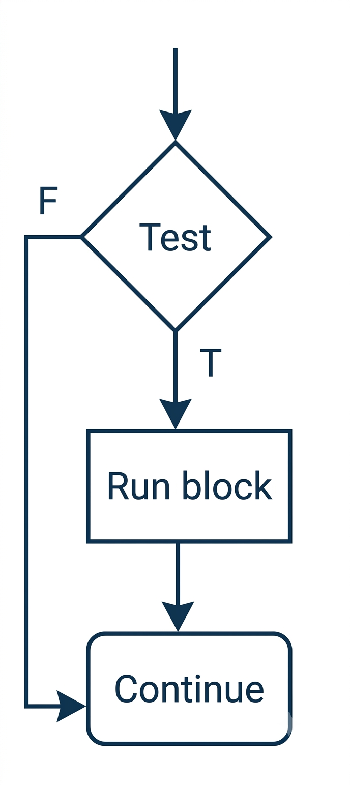
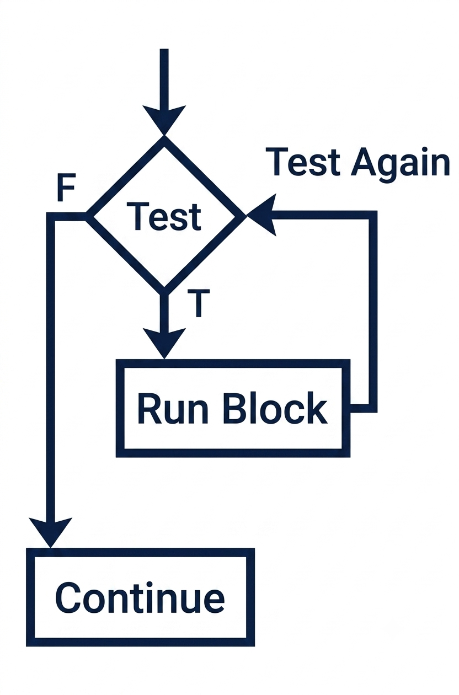
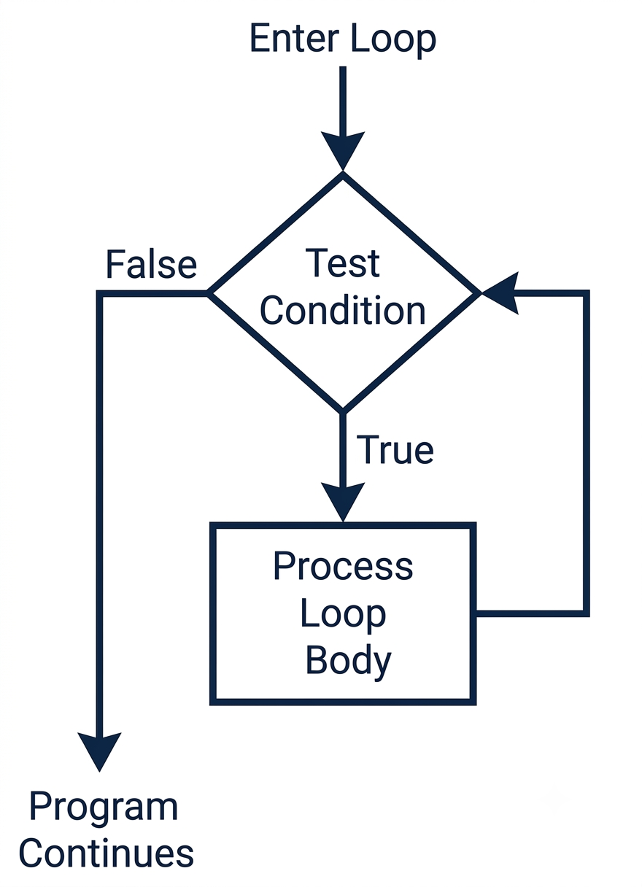
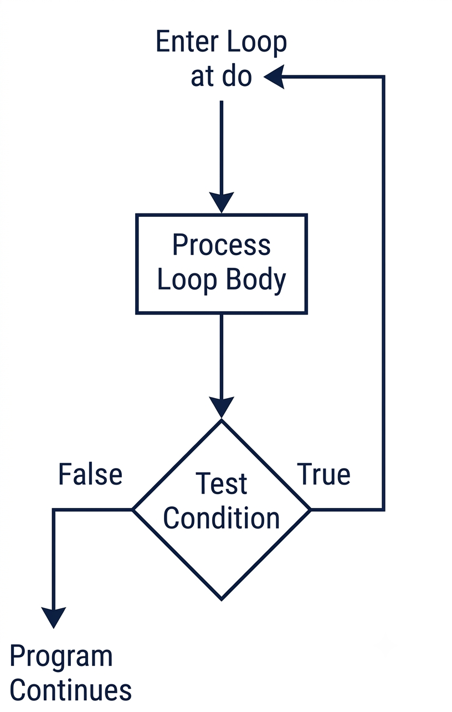
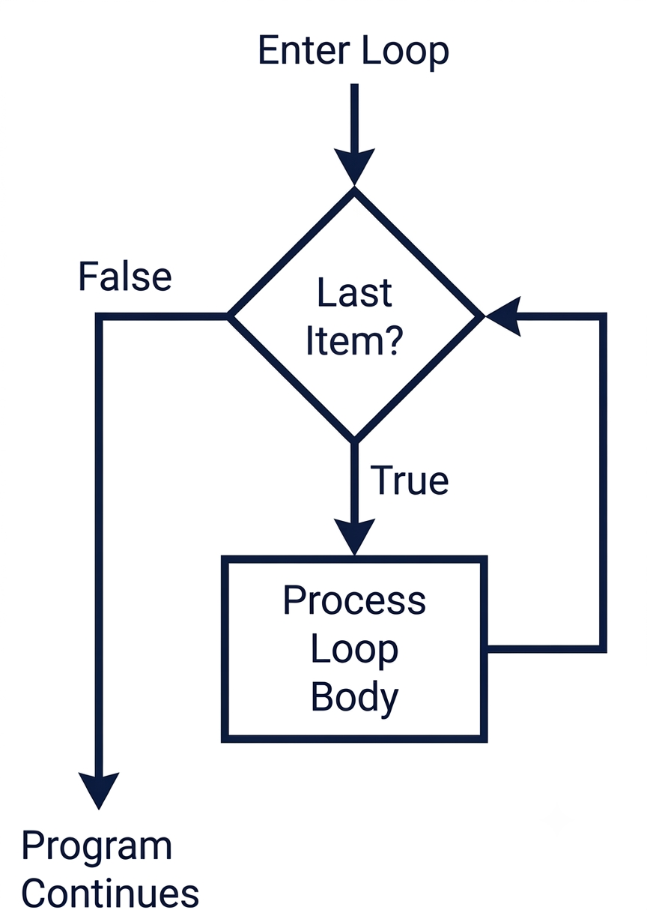

C++
| Design Question | Syntax Question |
|---|---|
| What work repeats? | Which loop construct expresses it? |
| What changes each time? | Where does the update happen? |
| When should repetition stop? | Where is the condition checked? |
| IPO Part | Loop Connection |
|---|---|
| Input | New data may arrive each pass |
| Process | The repeated work usually lives here |
| Output | Results may appear once per pass or after the loop |
for loop says: do this once for each item in a collection.The loop visits each element, but the stopping condition and movement through the collection are handled for you.
if statements and loops use a condition.| Structure | After the Block |
|---|---|
if |
Continue to the next statement |
| Loop | Return to the loop condition or end the loop |
if

loop



Entry-condition loops may run zero times. Exit-condition loops run at least once.
| Pass | count |
Condition count <= 3 |
Output |
|---|---|---|---|
| 1 | 1 | true | 1 |
| 2 | 2 | true | 2 |
| 3 | 3 | true | 3 |
| 4 | 4 | false | stop |
for keeps out of sight.while loop checks the condition before the body runs.The condition is tested first. If it is true, the body runs.
| IPO Part | Example |
|---|---|
| Input | Get or already have a value |
| Process | Repeat while the condition is true |
| Output | Show each result or the final result |
The loop belongs to the processing design.
| Pass | count Before Test |
Test | count After Update |
|---|---|---|---|
| 1 | 1 | true | 2 |
| 2 | 2 | true | 3 |
| 3 | 3 | true | 4 |
| 4 | 4 | false | 4 |
count <= 3 becomes false when count reaches 4.while is useful when the number of passes is not known ahead of time.while loop tests first.do-while loop runs the body before testing the condition.The semicolon after the condition is part of the syntax.
| IPO Part | Example |
|---|---|
| Input | Ask at least once |
| Process | Decide whether the value is acceptable |
| Output | Prompt again or continue |
The first pass happens before the loop can stop.
| Moment | choice |
Condition choice != 0 |
|---|---|---|
| Before body | unknown | not tested yet |
| After input | 1 | true |
| After input | 0 | false |
do-while a common fit for “ask, then check” designs.Use while when… |
Use do-while when… |
|---|---|
| The test should happen first | The body must happen first |
| Zero passes are possible | One pass is required |
| Existing state controls entry | New input controls the next pass |
do-while loop tests after the body.for loop is a natural fit for counted repetition.The header gathers the counter setup, the test, and the update in one place.

| IPO Part | Example |
|---|---|
| Input | Read speed and totalHours |
| Process | Calculate distance once per hour |
| Output | Display the hour and distance |
The count is known before the repeated processing begins.
The counter starts at 1, continues through totalHours, and changes by 1 each pass.
hour |
speed |
distance = speed * hour |
|---|---|---|
| 1 | 40 | 40 |
| 2 | 40 | 80 |
| 3 | 40 | 120 |
| 4 | 40 | stop |
Use counted for when… |
Use range-based for when… |
|---|---|
| The position matters | Each item is enough |
| A numeric range matters | The collection controls the passes |
| You need a counter value | You do not need an index |
for loop packages counter setup, test, and update in the header.Use this when every item in the collection should be processed and the item value is enough.
Use this when the number of passes or the numeric range is known.
Use this when the repeated work should happen only if the condition is already true.
Use this when the program must act once before it can decide whether to repeat.
| Repetition Need | Best Fit |
|---|---|
| Process every item in a collection | Range-based for |
| Repeat a known number of times | for |
| Repeat while a condition is true | while |
| Run once, then decide whether to repeat | do-while |
while tests before the body; do-while tests after the body.for is best for counted repetition.for remains the clearest choice when each collection item is enough.while when zero passes are possible.score is below 70.count starts at 0 and increases by 2.while body might never run.do-while when one pass is required.do-while when the program should be allowed to skip the body.do-while.0.while loop and compare the setup.while loop need extra setup before the loop?for for counted repetition.hour or day.<= when the intended range requires <.for when the number of passes is not known.for when the collection controls the loop.for loop when the condition is not count-based.for is still available.| Situation | Loop |
|---|---|
| Every vector element | Range-based for |
| Hours 1 through N | for |
| Repeat while data exists | while |
| Show menu at least once | do-while |
CISP 400 · Fowler